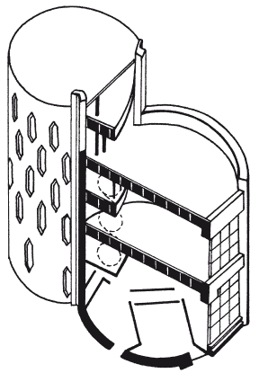

Любителям новейшей архитектуры: модерн, конструктивизм и хай-тек.

Искусство архитектуры и дизайна в строительстве тесно связаны, и для них характерно не только обращение в прошлое, но и устремление в будущее. Часто надо смелее отходить от старого, привычного и строить по-новому. На основании этой идеи возникли стилевые направления модерн и конструктивизм.
МодернМодерн – одно из названий стилевого направления в европейском и американском искусстве конца XIX – начала XX в., известно как новейшее, современное искусство. Наиболее полно принципы модерна прослеживаются в узкой сфере создания богатых индивидуальных жилищ. Модерн пытался преодолеть характерное для культуры XIX в. противоречие между художественным и утилитарным началами, придать эстетический смысл новым функциям и конструктивным системам, приобщить к искусству все сферы жизни и сделать человека частицей художественного целого. Период становления модерна (рубеж XIX–XX вв.) отмечен национально-романтическими увлечениями, интересом к средневековому и народному искусству.
Архитектура модерна была первым шагом в архитектурном развитии XX в. Она искала единства конструктивного и художественного начал, вводила свободную, функционально обоснованную планировку, применяла каркасные конструкции, разнообразные, в том числе новые, строительные и отделочные материалы – железобетон, стекло, кованый металл, необработанный камень, изразцы, фанеру, холст.
Свободно размещая в пространстве здания с различно оформленными фасадами, архитекторы модерна восставали против симметрии и регулярных норм градостроительства. Богатейшие возможности формообразования, предоставленные новой техникой, они использовали для создания подчеркнуто индивидуализированного образного строя. Здание и его конструктивные элементы получали декоративное и символически-образное осмысление. Наряду со стремлением к необычным живописным эффектам, динамикой с текучей пластичностью масс, уподоблением архитектурных форм органическим природным явлениям существовала и рационалистическая тенденция: тяготение к геометрической правильности больших, спокойных плоскостей, к строгости, порой даже пуританизму. Некоторые архитекторы и дизайнеры начала XX в. во многом предвосхищали функционализм, стремились выявить каркасную структуру здания, подчеркнуть тектонику масс и объемов.
Отличительной чертой этого стиля является простота, а основным художественным выражением в модерне служит орнамент. Его используют не только как элемент украшения, часто он формирует всю композиционную структуру. В строго геометрическом орнаменте преобладают различные мотивы круга и квадрата, однако возможно использование стилизованных растительных узоров эгейского искусства, готики, японской гравюры, элементов декоративных композиций барокко, рококо, ампира.
Дом в стиле модерн должен быть предельно прост, строг по форме, конструктивен, функционален, лишен каких бы то ни было украшений. В качестве строительного материала можно использовать бетон, пластик и алюминий. Основными украшениями уличного фасада зачастую служат только «граненые» проемы окон и дверей. Допускается использование небольших полукруглых башен, широких веранд, выходящих в сад, и эркера, который представляет собой полукруглый или многогранный остекленный выступ в здании, а также может быть выполнен в виде стеклянного просвета на крыше.
Возводить дом следует на участке, который лишен строгой симметрии, характерной для регулярного стиля. Бетон и другие современные материалы можно использовать, чтобы создать самые простые контейнеры и вазы для цветов. Для покрытия дорожек идеально подойдет двухцветная плитка, которую выкладывают в виде четких геометрических фигур. Единственным украшением сада могут быть самые простые цветы с яркой окраской, при этом гармонии можно достичь путем контрастов.
КонструктивизмКонструктивизм – направление в советском искусстве 1920-х гг. Сторонники конструктивизма выдвинули задачу «конструктурирования» окружающей среды, активно направляющей жизненные процессы. Они стремились осмыслить образующие возможности новой техники, ее логичных, целесообразных конструкций, а также эстетические качества таких материалов, как металл, алюминий, дерево, стекло. В практике конструктивизма частично воплотились лозунги производственного искусства. Показной роскоши буржуазного быта конструктивисты противопоставляли простоту и подчеркнутый утилитаризм новых предметных форм, в чем видели олицетворение демократичности и новых отношений между людьми.
Кредо архитектуры конструктивизма – так называемый функциональный метод, который требовал от архитектора учета особенностей функционирования зданий, сооружений и комплексов. Представители функционализма в архитектуре утверждали первичность утилитарно-практического назначения (функции) архитектуры по отношению к форме своего творения.
Наиболее ярко идеи конструктивизма представлены в доме, который построил для себя в Москве архитектор К. С. Мельников. Это строение даже в наше время выглядит ультрасовременным. Небольшой жилой дом составлен из 2 цилиндров, слегка врезанных друг в друга. Здание включает мастерскую и жилые помещения. Южный фасад, подставляющий солнцу высокий витраж остекления, имеет два этажа, в северном цилиндре на третьем этаже расположена мастерская. Этажи южного и северного объемов расположены в разных уровнях так, что каждый марш винтовой лестницы выходит на один из уровней, а перекрытия второго и третьего этажей продолжаются в виде балконов в смежные помещения. Множество окон в виде вертикальных шестиугольников обеспечивают помещения достаточным количеством света в любое время дня, поскольку расположены по кругу (рис. 2).

Для конструктивизма и функционализма характерны принципы зонирования территории, в том числе и окружающего дом сада, с выделением пространства для каждой из главных жизненных функций, которые определялись так: «жить, работать, отдыхать, передвигаться».
Хай-тек – стиль высоких технологийВ последние годы все большей популярностью пользуется стиль хай-тек, который возник на базе промышленных помещений еще в конце XIX в., но окончательно оформился в последней трети XX в. Хай-тек – это стиль индустриального минимализма, в котором все элементы дизайна строго подчиняются функциональному назначению.
Характерные черты стиля хай-тек – обилие металла, стекла, бетона. Практически полное отсутствие декора в таком интерьере восполняется «работой» фактуры: блеском хромированных и металлических поверхностей, игрой света на стекле, рисунком натуральной древесины. К этому могут добавляться открытый кирпич и разнообразные современные синтетические материалы.
Как это ни странно на первый взгляд, но хай-тек – это, прежде всего, конструкционная открытость, включение в визуальный ряд труб, арматуры, воздуховодов, сложное структурирование пространства.